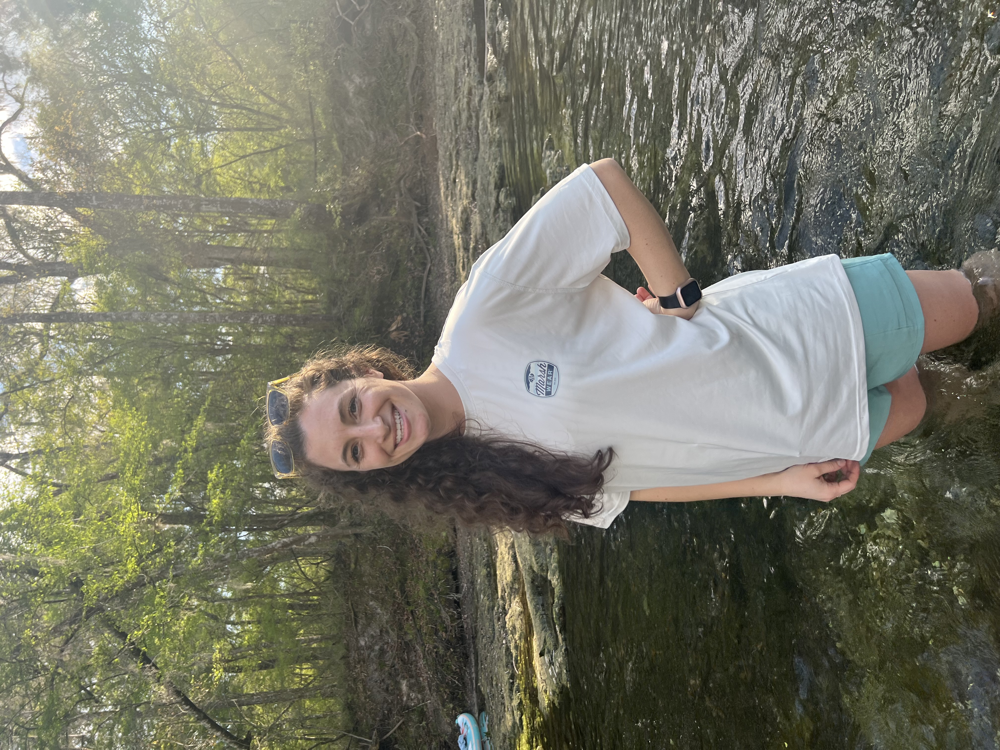

About Me: Beyond the Dashboard
The Why Behind the Work
 Driven by curiosity about the nature of reality and awe of the natural world, I’m a Developer by title and a lifelong learner by nature. I hold a persistent desire to know more and to work toward incremental improvement, both in the systems I work with and in the world around me. Outside of work, I spend my time immersed in books, learning languages, climbing, and exploring natural spaces, both above and below the surface.
Driven by curiosity about the nature of reality and awe of the natural world, I’m a Developer by title and a lifelong learner by nature. I hold a persistent desire to know more and to work toward incremental improvement, both in the systems I work with and in the world around me. Outside of work, I spend my time immersed in books, learning languages, climbing, and exploring natural spaces, both above and below the surface.
Using Data Analytics to Drive Meaningful Change

Most Influential Recent Reads
- Figuring by Maria Popova
-
Every bit as masterful as the artists and scholars about whom she muses, Popova brings into clarity the intimate lives of some of history's greatest minds and most significant contributors. Journeying across lifetimes, I was captivated by the arduous challanges and extraordinary achievements experienced by the likes of Margaret Fuller, Emily Dickinson, and Rachel Carson to name but a few. The true genius of the work is the layering of historical context with vivid descriptions of interpersonal relationships that together offer a textured view of the entwined interbeing that characterizes the story of our species. This book is among the most influential reads of my lifetime and is one that I look forward to revisiting again and again in future years.
- The Light Eaters by Zoe Schlanger
-
Schlanger curates a collection of the most cutting edge research on plant life today, narrating a complex picture of the inner lives of the flora with whom we share our world. This book demistified for me long held wonderings about plant conciousness and delivered moments of jaw dropping revelation and discovery. I found this work deeply delightful from start to finish.
- The Big Picture by Sean Carroll
-
Carroll's accessible yet thorough descriptions of complex ideas have long made him a favorite author and podcaster of mine. He weaves together the finer details of the laws of physics with the reflections of a philospher to produce meaningful explorations of the foundations of existence. It is through reading this work that I discovered in myself a poetic naturalist and solidified Carroll's position in my library as a top contributor.
- Devotions by Mary Oliver
-
Remarkably thoughtful, keenly observant, and subtly soul stirring, the poetry of Mary Oliver was among my greatest pleasures of 2024.
Why I read as much as I can, as often as I can
“I have a foreboding of an America in my children's or grandchildren's time -- when the United States is a service and information economy; when nearly all the manufacturing industries have slipped away to other countries; when awesome technological powers are in the hands of a very few, and no one representing the public interest can even grasp the issues; when the people have lost the ability to set their own agendas or knowledgeably question those in authority; when, clutching our crystals and nervously consulting our horoscopes, our critical faculties in decline, unable to distinguish between what feels good and what's true, we slide, almost without noticing, back into superstition and darkness." Carl Sagan